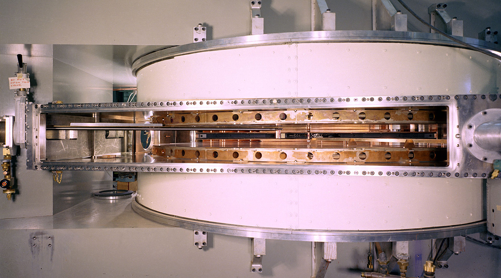

Berkeley, California

Located in Berkeley, California.
The Scientists at LBNL study atomic nuclei under extreme conditions in the universe. They push nuclei to the physical boundaries to understand how the behave in unstable conditions. For example, they create and study the nuclear phenomena that occur with extreme proton-to-neutron ratios and study the properties of superheavy elements (Z~100). To do this, the scientists use massive particle accelerators, like their 88-inch Cyclotron, to smash together and create rare states. By crashing beams into target materials, researchers can create unstable isotopes and superheavy elements that do not exist naturally on Earth. Additionally, they use gamma-ray spectrometers to detect and measure high-energy photons emitted when excited or unstable nuclei decay.
What are the maximum limits of existence and structure of atomic nuclei?
Nuclear structure and many-body physics: Scientists at LBNL probe the structure of the nucleus at low energy. When they accelerate particles together, they are not using enough energy to break the nucleus into quarks and gluons. Rather, they are focusing on how protons and neutrons organize and studying the nuclear many-body system.
60 MeV: The 88-Inch Cyclotron at LBNL is a machine with both light and heavy ion capabilities. Protons and other light-ions are available at high intensities up to maximum energies of 60 MeV for protons (and 65 MeV for deuterons, 170 MeV for 170 MeV (3He), and 130 MeV (4He)). Most heavy ions, all the way up to uranium, can also be accelerated to maximum energies that vary with their mass and charge state. For a proton, 60 MeV means the particle is accelerated until it possesses 60 million electronvolts of energy. This is enough energy to trigger nuclear reactions, eject nucleons, or create short-lived isotopes, but it is not energetic enough to break nucleons into quarks and gluons.
Sources:
https://nuclearscience.lbl.gov/research/research-programs/low-energy-nuclear-physics/low-energy-nuclear-physics-research/nuclear-structure-research/
https://nuclearscience.lbl.gov/research/facilities/88-inch-cyclotron/
https://cyclotron.lbl.gov/home